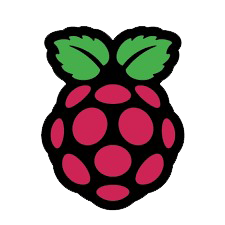

My First Project
Although I haven't ventured into independent programming endeavors yet, I've successfully executed numerous projects during my university tenure. These endeavors enabled me to translate theoretical knowledge into real-world applications, refining my problem-solving abilities and deepening my grasp of programming fundamentals. I'm enthusiastic about advancing my skills through immersive projects and practical applications as I continue on my academic and professional path.
Additionally, I recently created my first website, and I recently delivered a presentation using a Raspberry Pi..
